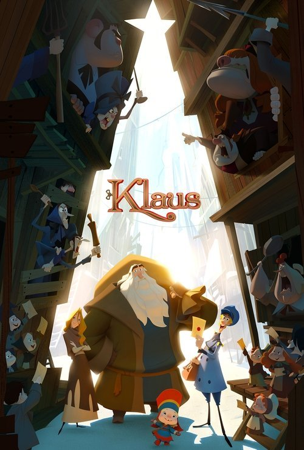

Klaus (2019)
Sinopsis Rápida
Un cartero vago es enviado a una isla remota y congelada, donde encuentra un herrero solitario que crea juguetes mágicos y desata una inesperada tradición navideña.
Sinopsis Detallada
Klaus es una encantadora película de animación que reinventa el origen de la Navidad. Jesper, un cartero perezoso, llega a Smeerensburg, un pueblo aislado y hostil, donde debe entregar 6000 cartas para evitar ser expulsado. Ahí conoce a Klaus, un enigmático artesano que fabrica juguetes, desatando una inesperada colaboración que transforma el pueblo con la magia de la Navidad. La película destaca por su animación exquisita y su historia cálida y conmovedora, reinventando con gracia una historia tradicional.
¿Por qué tenés que verla?
- Una historia navideña conmovedora y original que te hará creer en la magia.
- La animación es excepcional, con un estilo visual único y detalles impresionantes.
- Klaus ha sido celebrada por su estética y mensaje de esperanza, contribuyendo a un renovado interés por las películas animadas para adultos.
- Una historia simple pero efectiva sobre la bondad, la amistad y el espíritu navideño.
Idea Extra
Análisis del simbolismo en la película Klaus: el significado de los juguetes, los colores y la transformación del pueblo.
{{CONTENIDO_RELACIONADO}}